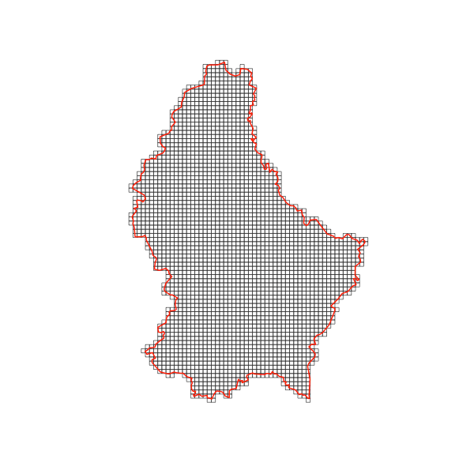

Introduction
gridmaker is an R package designed to create GISCO compatible and INSPIRE-compliant grids with IDs that look like ‘CRS3035RES1000mN3497000E4448000’ or ‘1kmN3497E4447’. Input can be sf, sfc objects or bounding boxes. Output can be sf polygons, sf centroids, or just data.frame with grid cell center or bottom left corner coordinates. The resulting grids are always aligned to rounded coordinates as per INSPIRE requirements (see here https://github.com/INSPIRE-MIF/technical-guidelines/tree/main/data/su).
Installation
You can install the development version of gridmaker from R Universe with:
install.packages('gridmaker',
repos = c('https://e-kotov.r-universe.dev', 'https://cloud.r-project.org')
)or from GitHub with:
# install.packages("pak")
pak::pak("e-kotov/gridmaker")Example: Create a 1km grid for Luxembourg
We will use giscoR package to get the boundary of Luxembourg. If you don’t have it installed, you can install it from CRAN with install.packages("giscoR").
Let’s get the boundary of Luxembourg:
lux_boundary <- gisco_get_countries(
year = "2024",
epsg = "3035",
country = "LUX",
resolution = "01"
)
plot(lux_boundary$geometry)Make sure the boundary is in a projected CRS (not in lat/lon):
lux_boundary_3035 <- st_transform(lux_boundary, 3035)Now we can create a 1km grid covering Luxembourg:
lux_grid_1km <- create_grid(
grid_extent = lux_boundary_3035,
cellsize_m = 1000,
output_type = "sf_polygons",
clip_to_input = TRUE
)
plot(st_geometry(lux_grid_1km), border = 'lightgrey')
The resulting grid has INSPIRE-compliant IDs:
head(lux_grid_1km, 3)Simple feature collection with 3 features and 5 fields
Geometry type: POLYGON
Dimension: XY
Bounding box: xmin: 4033000 ymin: 2933000 xmax: 4058000 ymax: 2934000
Projected CRS: ETRS89-extended / LAEA Europe
id X_LLC Y_LLC GRD_ID_LONG GRD_ID_SHORT geometry
20 20 4033000 2933000 CRS3035RES1000mN2933000E4033000 1kmN2933E4033 POLYGON ((4033000 2933000, ...
21 21 4034000 2933000 CRS3035RES1000mN2933000E4034000 1kmN2933E4034 POLYGON ((4034000 2933000, ...
44 44 4057000 2933000 CRS3035RES1000mN2933000E4057000 1kmN2933E4057 POLYGON ((4057000 2933000, ...Note
For original Eurostat’s command line utility to create GISCO grids, see https://github.com/eurostat/GridMaker.